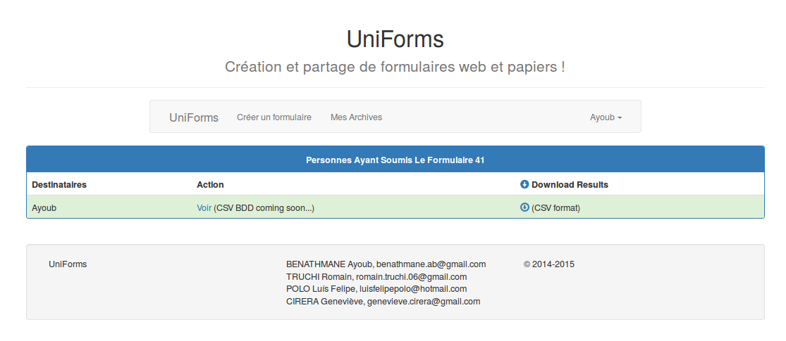
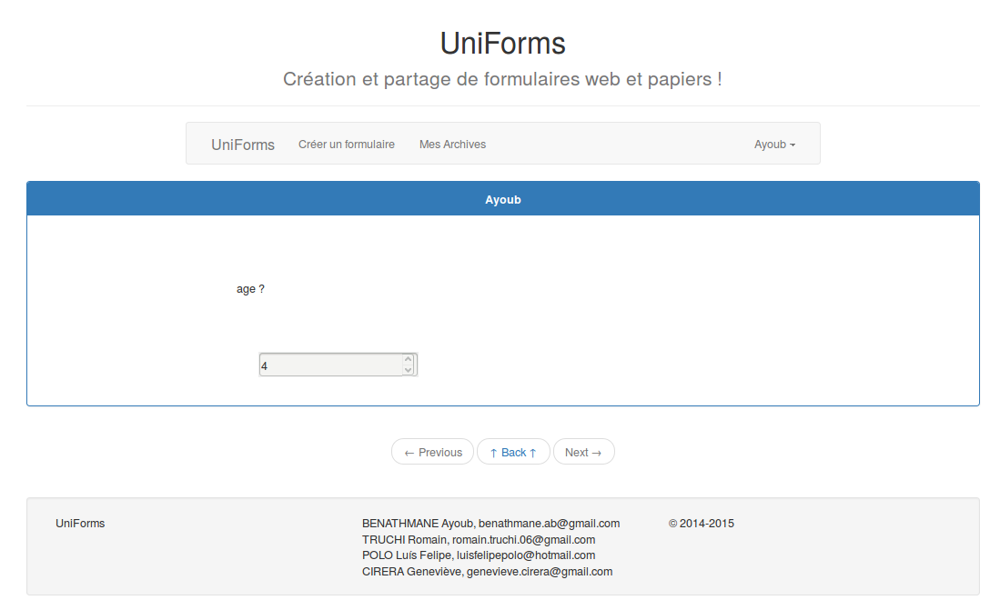

suivant: Répondre monter: Création précédent: Modifier un formulaire Table des matières
|  figurePage de consultation des réponses |
Ici, vous avez la possibilité de consulter les réponses sous deux formes, directement sous la forme du formulaire rempli en cliquant sur ``Voir'' de la colonne ``Action'', cela vous mène à la page figure  . Ou bien, en téléchargeant le fichier CSV en cliquant sur l'icone de la colonne ``Download Results''.
. Ou bien, en téléchargeant le fichier CSV en cliquant sur l'icone de la colonne ``Download Results''.
Sur la page figure  , vous avez la possibilité de passer de résultats en résultats grâce aux boutons ``Previous'' et ``Next'', le bouton ``Back'' vous ramène à la page figure
, vous avez la possibilité de passer de résultats en résultats grâce aux boutons ``Previous'' et ``Next'', le bouton ``Back'' vous ramène à la page figure  .
.
|  figureFormulaire rempli par un destinataire |